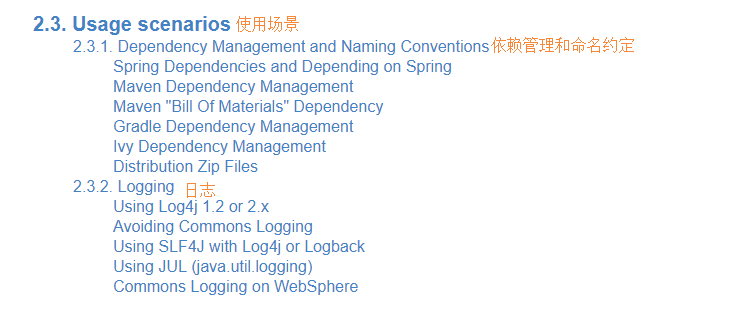
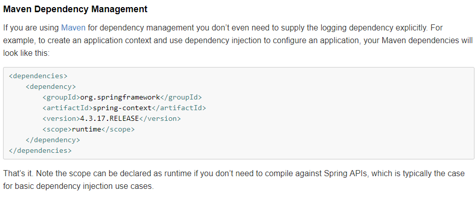
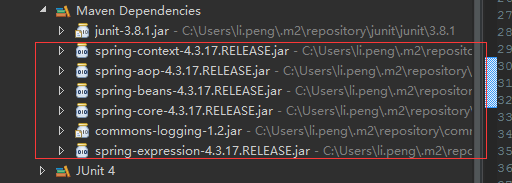
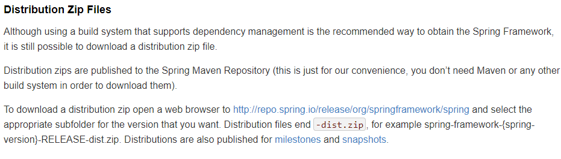
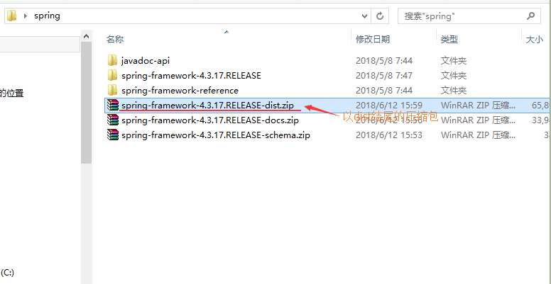
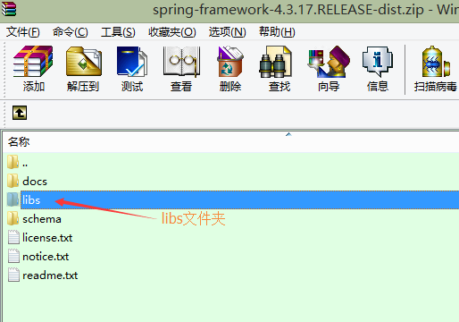

有关spring环境的搭建可以参考官方文档的2.3章节

第一种方式（官方推荐）：使用maven
官方文档

把上面的东西贴到pom文件里面就可以了，然后maven就会自动加载以下的包：

第二种方式：手动导包
官方文档

根据官网的说法，到http://repo.spring.io/release/org/springframework/spring这个网址去下载zip包，然后找到以“dist”结尾的压缩包后到libs文件夹下面找jar包，如下图所示：
 